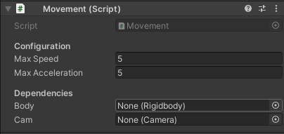
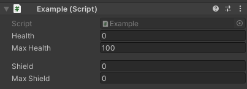
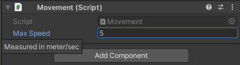
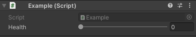
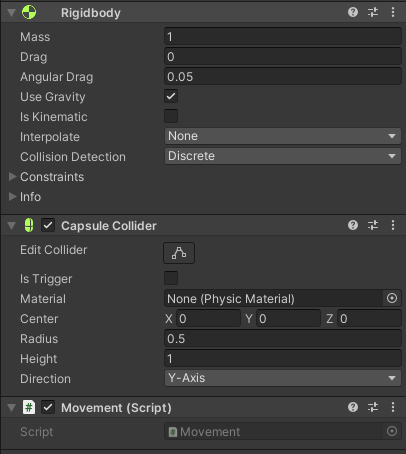
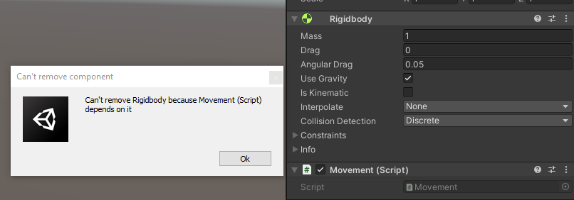

Convenient Unity Attributes
Unity offers a range of convenient ways to manipulate and hack its inspector. Unfortunately, thanks to the size of Unity's documentation, these types of methods go unnoticed.
I won't attempt to iterate every useful attribute in Unity's library. I encourage you to explore Unity's documentation.
Header
This simple and effective attribute will display a header above the property to which it is applied.
public class Movement : MonoBehaviour { [Header("Configuration")] public float MaxSpeed = 5f; public float MaxAcceleration = 5f; [Header("Dependencies")] public Rigidbody body; public Camera cam; }

Space
The Space attribute adds user-defined pixel spacing between fields. I don't often reach for this attribute, but it can be handy in cases where a Header isn't appropriate. It helps designers scan through fields by creating a small visual break.
Unity's documentation illustrates a good use case (with some modifications).
public class Example : MonoBehaviour { [SerializeField] private int health = 0; [SerializeField] private int maxHealth = 100; [Space(10)] // 10 pixels of spacing here. [SerializeField] private int shield = 0; [SerializeField] private int maxShield = 0; }
A 10-pixel space is between maxHealth and shield.

Tooltip
Unsurprisingly, the Tooltip attribute creates a tooltip over a field when hovered. The use case for these types of in-engine documentation is nearly endless: providing context, usage hints, and so much more.
I won't use Unity's example because Range is better suited for that use case. We'll cover that attribute next.
public class Movement : MonoBehaviour { [SerializeField] [Tooltip("Measured in meter/sec")] private float MaxSpeed = 5f; }

Although in this particular case, I may suggest a custom attribute that appends "m/s" to the end of the field, a tooltip can provide this type of clarity and context.
Range
We'll revisit Unity's Tooltip example with a different attribute: Range.
public class Example : MonoBehaviour { [Tooltip("Health value between 0 and 100.")] int health = 0; }
This component wants to restrict health between 0 and 100. Rather than enforcing that restriction through code, it relies on the designer to abide by this restriction. Let's correct it using Range.
public class Example : MonoBehaviour { [SerializeField, Range(0, 100)] private int health = 0; }

The inspector is now enforcing the restriction and displaying it as a slider between the two values. I find this helps reason about the range better than a number field.
SerializeField
Of all the attributes offered by Unity, this one sees the most use in my code. This attribute forces Unity's inspector to serialize and display the field in the inspector regardless of accessibility. This pattern is particularly effective for exposing values in the inspector while keeping them inaccessible to the codebase.
Consider this simple example.
public class Health: MonoBehaviour { public int Health = 5; public UnityEvent Damaged; public void TakeDamage(int damage) { if (damage > 0) { Damaged?.Invoke(); Health = Mathf.Max(Health - damage, 0); } } }
Setting Health to public allows a designer to set the initial health and tweak it during gameplay. These types of considerations are great for playtesting and debugging. Unfortunately, anything can modify Health without calling TakeDamage(int) which, can introduce an undesirable side effect: the Damaged event won't fire.
It's possible to mitigate this issue by using a C# property.
public class Health : MonoBehaviour { private int health = 5; public int Health { get => health; set { if (value < health) { Damaged?.Invoke(); } health = value; } } public UnityEvent Damaged; }
It's now impossible to modify Health without firing Damaged. However, by default, Unity does not render C# properties in the inspector. A designer wanting to set the initial health or tweak the health value during playtesting will be unable. Let's try using SerializeField instead.
public class Health : MonoBehaviour { [SerializeField] private int health = 5; public UnityEvent Damaged; public void TakeDamage(int damage) { if (damage > 0) { Damaged?.Invoke(); health = Mathf.Max(health - damage, 0); } } }
`
health will be editable in the inspector, but only TakeDamage will be accessible to code. It's also possible to combine the property and SerializeField approaches by exposing a private backing field to the inspector.
HideInInspector
This attribute acts as the reverse of SerializeField: this will hide a public field from the inspector. It is helpful for hiding complexities from a designer without rendering it inaccessible to the rest of the code.
Let's hide some component dependencies without making them inaccessible.
[RequireComponent(typeof(Rigidbody), typeof(CapsuleCollider))] public class Movement : MonoBehaviour { [HideInInspector] public Rigidbody Body; [HideInInspector] public CapsuleCollider Collider; private void Start() { Body = GetComponent<Rigidbody>(); Collider = GetComponent<CapsuleCollider>(); } }

RequireComponent
This attribute doesn't neatly fit into this list, although I'm sure it's important enough to discuss. RequireComponent ensures that the specified component is attached to a GameObject. It's great for wrapping/enhancing built-in components or just assuring the existence of a dependency.
RequireComponent will automatically add any required components which are missing. It will also prevent removing them while using the inspector. It's added to the MonoBehaviour rather than a field.
[RequireComponent(typeof(Rigidbody))] public class Movement : MonoBehaviour { private Rigidbody body; private void Start() { body = GetComponent<Rigidbody>(); } }
Unity adds a Rigidbody if it doesn't already exist on the GameObject. Attempting to remove Rigidbody will cause an error.
